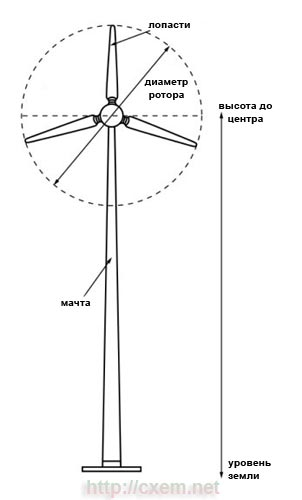
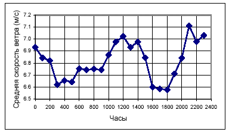
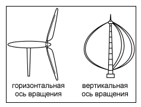
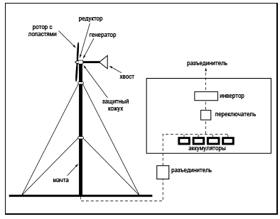
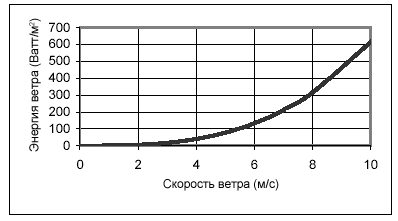
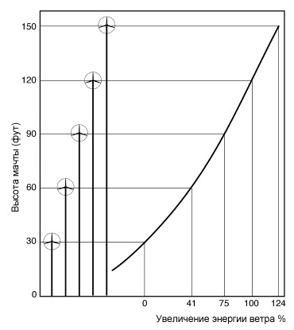
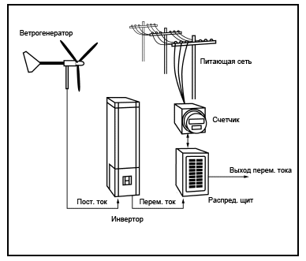
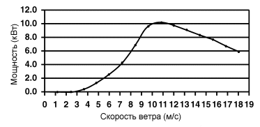
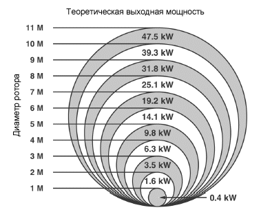
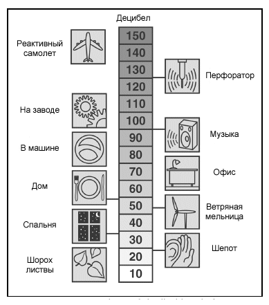

Маленькие ветрогенераторы для дома

Энергия ветра - это экологически чистая, неисчерпаемая энергия. Для преобразования энергии ветра в электрическую энергию служат ветряные электростанции (мельницы, ветрогенераторы).
Ветряные мельницы используемые для выработки
электрической энергии бывают разных размеров. Большие ветрогенераторы,
которые обычно используются на ветряных фермах (электростанциях), могут
вырабатывать большое количество электричества - сотни мегаватт, которым
можно обеспечивать сотни домов. Небольшие ветряки, которые вырабатывают
не больше 100 кВт электроэнергии, используются в частных домах, фермах,
подсобных хозяйствах и т.п., служат источником дополнительной
электроэнергии, способствуют уменьшению оплаты за основной источник
электроэнергии.
Очень маленькие ветряки, мощность которых составляет 20-500 Вт,
используются для подзарядки аккумуляторов и др. сферах, где не требуется
большое количество электроэнергии.
Небольшие ветроэлектростанции будут экономически эффективны, если будут соблюдены следующие условия:
- ветер в вашем месторасположении дует стабильно и много дней в году;
- есть достаточно места для установки ветряка;
- местными властями разрешена установка ветряков;
- ваши затраты на электроэнергию высоки;
- вы не подключены к питающей сети или она находится далеко от вас;
- вы готовы инвестировать деньги в ветрогенератор;
- во избежание проблем с соседями, ветряк должен находится не ближе чем 250-300м к ним.
Будет ли ваш ветряк для дома экономически целесообразным - больше
всего зависит от качества ветра. В большинстве случаев, среднегодовая
скорость ветра в 4.0-4.5 м/с (14.4-16.2 км/ч) является тем минимумом,
чтобы ветрогенератор был экономически выгоден. В анализе ветра вам
помогут сайты, где представлены карты ветров России и других стран.
Также, вам может помочь местная метеорологическая станция, где вы
можете посмотреть архив данных по силе ветра. Но следует обратить
внимание на расположение станции, т.к. различные препятствия - деревья,
строения, возвышенности могут стать причиной искаженных данных о ветре.
Для более точной оценки ветра в вашей местности вам необходимо приобрести устройства измеряющие скорость ветра. Особенно это актуально, если ваша местность холмистая или имеет необычный ландшафт.
Наиболее важной деталью в приборе для измерения скорости ветра является анемометр. Он состоит из чашечной (или лопастной) вертушки укреплённой на оси, которая соединена с измерительным механизмом. Лопасти анемометра вращаются и вырабатывают сигнал, пропорциональный скорости ветра. При покупке анемометра не будет лишним приобрести устройство, записывающее показания с него, а также трипод, кронштейн и т.п., где он будет монтироваться.
Существуют более дорогие цифровые устройства для измерения скорости ветра. Там также используется анемометр, но данные поступают в компьютер, где они обрабатываются и запоминаются. В последнее время данные устройства становятся все более популярными и дешевыми. Пример данных о скорости ветра, снимаемых и отображаемых в реальном времени вы можете посмотреть на сайте gdeduet.ru
Неважно какой измерительный инструмент вы используете для оценки скорости ветра, но хотя бы минимум один раз в год вы должны сравнивать ваши данные с другими. Также важно измерительно оборудование размещать достаточно высоко, чтобы избежать турбулентности, которая создается деревьями, строениями и другими препятствиями. Наиболее оптимальным размещением измерительного прибора является его размещение на уровне центра ротора ветрогенератора.

Место для размещения ветрогенератораБольшое значение имеет место, где вы собираетесь разместить ваш ветряк. Помните, что не следует его размещать вблизи деревьев, домов и т.п., т.к. вы не получите полной отдачи от ветряка.
Также учитывайте что:
- сила ветра всегда больше на вершине холмов, у береговой линии, в степях, в местах где нет деревьев и строений.
- деревья могут расти, а ветряк - нет.
- необходимо заранее информировать соседей о ваших планах, во избежании проблем с ними в будущем.
- желательно поставить ветряк на достаточном расстоянии от соседей. Обычно достаточно 250-300м.
Не ожидайте, что ваша ветроэлектростанция будет все время вырабатывать достаточное количество электроэнергии. Скорость ветра в одном и том же месте может сильно различаться и как следствие будет и различаться количество вырабатываемой электроэнергии. И если сила ветра будет меняться в пределах 10%, то вырабатываемая электроэнергия будет изменяться в пределах 25%!

Типы ветрогенераторовСуществует 2 основных типа ветрогенераторов: с горизонтальной осью
вращения и вертикальной. Горизонтальные ветряки должны быть направлены
по ветру. Для этого, в их конструкции предусмотрен так называемый
"хвост".
Вертикальные ветрогенераторы работают в любом направлении ветра, но
требует больше наземного пространства, т.к. необходимо предусмотреть
растяжки для устойчивости ветряка.

Компоненты ветроэлектростанцииОсновные компоненты типичной ветряной электростанции показаны на рисунке ниже.

Они включают в себя:
- ротор с лопастями, которые имеют аэродинамическую форму.
- редуктор или коробка передач, которые согласует скорость вращения между ротором и генератором. Маленькие ветряки (до 10 кВт) обычно не имеют редуктора.
- защитный кожух, который защищает от внешних воздействий редуктор, генератор, электронику и другие компоненты ветрогенератора.
- хвост ветряка - необходим для его поворота по ветру.
Для ветрогенераторов с горизонтальной осью вращения необходима мачта (вертикальные ветряки обычно устанавливаются прямо на земле).
Мачты бывают различных видов: на растяжках (которые жестко закреплены), поворотная мачта на растяжках (может подниматься и опускаться для обслуживания и ремонта), свободно-стоящая мачта без растяжек (они тяжелые, но зато занимают не так много места на земле).
Очень важным факторов является высота мачты. Энергия ветра пропорциональна скорости ветра в третей степени (в кубе). Т.о. если скорость ветра удвоилась, то энергия ветра возрастет в 8 раз (2х2х2=8) (Рисунок 6). Скорость ветра увеличивается с высотой, т.е. увеличивая высоту мачты можно сильно увеличить энергоэффективность ветряка.


Рекомендуемая высота установки 24-37 метров. Устанавливать ветряк на меньшей высоте - то же самое, что расположить солнечные батареи в тени.
На всякий случай просмотрите местное законодательство на предмет ограничений на высоту мачты для ветроэлектростанций. Используйте конструкцию мачты, одобренной производителем ветряка, иначе вы можете потерять гарантию на него. Обязательно заземлите мачту и предусмотрите молниеотвод.
Для электробезопасности необходимо использовать разъединители и автоматические выключатели. Они также обеспечат безопасный доступ к ветряку для его обслуживания и модернизации.
Также могут понадобиться другие компоненты ветроэлектростанции. Аккумуляторы - смогут накапливать излишки электроэнергии от ветряка. Но, поскольку аккумуляторы используют постоянный ток, то для преобразования его в переменный необходим инвертор.

Если дом, ферма или хозяйство подключены к общей системе энергообеспечения, то в ветренные дни излишек энергии можно продавать электросетям (неактуально для нашей страны). А когда ветер слабый и электроэнергии ветряка не хватает, то нужно будет покупать электроэнергию от общей электросети.
Стоимость ветрогенератораСтоимость небольшого ветряка $2000-$8000 за 1 кВт. Однако, это только 12-48% от стоимость всех компонентов ветряной электростанции: инверторы, аккумуляторы, зарядные устройства, АВР и т.п.
Но большой плюс ветрогенератора в том, что однажды купив его, вам больше практически ни за что не прийдется платить, кроме планового техобслуживания.
Производительность ветрогенератора обычно описывается производителем как график зависимости выходной мощности к скорости ветра.

Одной из проблем при выборе и сравнении ветрогенераторов является отсутствие единного стандарта измерения выходной мощности.
Производители сами выбирают при какой скорости ветра указывать выходную
мощность. Возьмем к примеру "Wind-o-matic" и "Mighty-wind" - у обоих
заявленная мощность 1000 Ватт. Но у "Wind-o-matic" это мощность при
скорости ветра 5 м/с, в то время как у "Mighty-wind" это мощность при
10 м/с. Вследствии того, что энергия ветра пропорциональна скорости
ветра в кубе, то ветряк выдающий 1 кВт при при 10 м/с, даст только 1/8
от максимальной мощности при 5 м/с. Т.о. при скорости ветра 5 м/с
"Wind-o-matic" будет выдавать честные 1000 кВт, в то время как
"Mighty-wind" всего 125 Ватт!
Более правильным является сравнение ветрогенераторов по площади и размеру лопастей. Чем больше площадь, тем больше энергии может вырабатывать ветряк. При удвоении площади солнечных батарей - мощность увеличивается вдвое. Также и в ветрогенераторе - при увеличении площади лопастей возрастает выходная мощность.
Если вы не знаете площадь лопастей ветряка, то вы можете сравнивать по диаметру ротора. Незначительное увеличение диаметра ротора ведет к значительному увеличению отдаваемой электроэнергии от ветрогенератора (см. рисунок ). Значения указанные на рисунке являются ориентировочными и на них опираться не следует, т.к. генерируемая мощность ветряка зависит от множества других факторов.

Выбор размера ветрогенератораДля определения подходящего размера ветряка для начала посмотрите
сколько электроэнергии вы потребляете в месяц. Затем полученное значение
умножьте на 12 месяцев.
Примерное количество электроэнергии вырабатываемое ветряком вы можете получить по формуле:
AEO = 1.64 * D*D * V*V*V
Где: AEO - электроэнергия за год (кВт*ч/год), D - диаметр ротора (в метрах), V - среднегодичная скорость ветра (м/сек)
Т.о. вы можете выбрать оптимальный размер ветрогенератора,
вырабатывающий необходимую мощность для вашего дома или хозяйства. И
возможно сэкономить на покупке.
Многие люди требуют бережного отношения к окружающим их вещам: ландшафту, виду, исторически местам, тишине, соседям и т.п. Обязательно переговорите с соседями о ваших планах установить ветроэлектростанцию. Также вы должны понимать, что людям свойственен страх перед чем-то новым и неизвестным.
Многие люди думают, что ветряки наносят вред птицам. Но на самом деле раздвижные двери более опасные для птиц, чем небольшие ветряки. Также ветрогенераторы оказывают ничтожное влияние на радио и телевизионное вещание. Лопасти всех современных ветряков сделаны из стекловолокна или дерева. Эти материалы прозрачны для электромагнитных волн.
ШумСоседи не приемлят шум от ветрогенератора. Прежде чем установить ветроэлектростанцию, ознакомьте ваших соседей с теми шумами, которые она может производить:
- аэродинамические шумы - возникают из-за потоков воздуха производимыми лопастями. Шумы увеличиваются со скоростью вращения ротора. Иногда из-за воздушных турбулентностей, некоторые виды лопастей могут издавать свистящий звук.
- механические шумы - могут возникать в других компонентах ветряка (генератор, редуктор и т.п.)
В 250-ти метрах, от типичной ветроэлектростанции уровень звукового давления составляет приблизительно 45 дБ. Небольшие ветряки производят не больше шума, чем кондиционеры.
Лопасти небольшого ветряка вращаются со средней скоростью 175-500 оборотов в минуту, максимум 1150 об/мин. Большие ветряки вращаются с постоянной скоростю 50-15 об/мин

ОбслуживаниеВетроэлектростанции требуется постоянное техническое обслуживание - регулярные осмотры, смазка трущихся частей и т.п. Ежегодно проверяйте болтовые соединения и электрические контакты, подтягивайте их, если необходимо. Также проверяйте ваш ветряк на наличие коррозии и натяженность растяжек мачты.
Если лопасти сделаны из дерева, то наносите краску для защиты. На кромки лопастей наклейте прочную ленту для защиты от абразивной пыли и летающих насекомых. Если краска растрескается, а пленка отклеится, то незащищенное дерево быстрее прийдет в негодность. Влажность, проникшая в дерево лопастей, может вызвать дисбаланс ротора. Ежегодно проверяйте лопасти ветряка.
После 10 лет эксплуатации лопасти и подшипники должны быть заменены. При правильной установке и эксплуатации ветроэлектростанция может прослужить 30 и более лет. Правильное обслуживание также минимизирует уровень шума от вашего ветряка.
БезопасностьВсе ветрогенераторы имеют максимальную скорость вращения ветра, выше которой они не могут работать. Когда скорость ветра превышает это значение, то в ветрогенераторе должен сработать тормозной механизм не допускающий превышения критического значения.
При использовании ветряка в холодных районах, необходимо позаботиться о проблеме обледенения, а также размещать аккумуляторный блок в изолированном месте.
Установка ветряка на крышу здания не рекомендуется. Но если он маленькой мощности (до 1 кВт), то можно сделать и исключение. Дело в том, что ветрогенератор может давать вибрацию, которая может передаваться на поверхность, на которой он установлен.
Перевод: Колтыков А.В. для сайта cxem.net